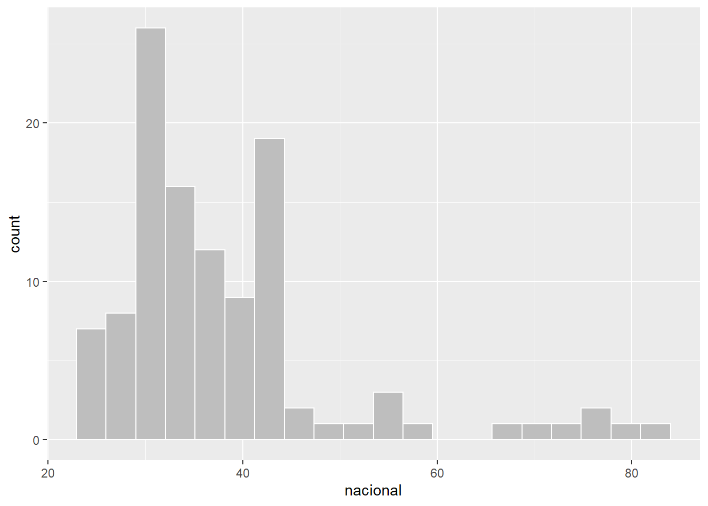
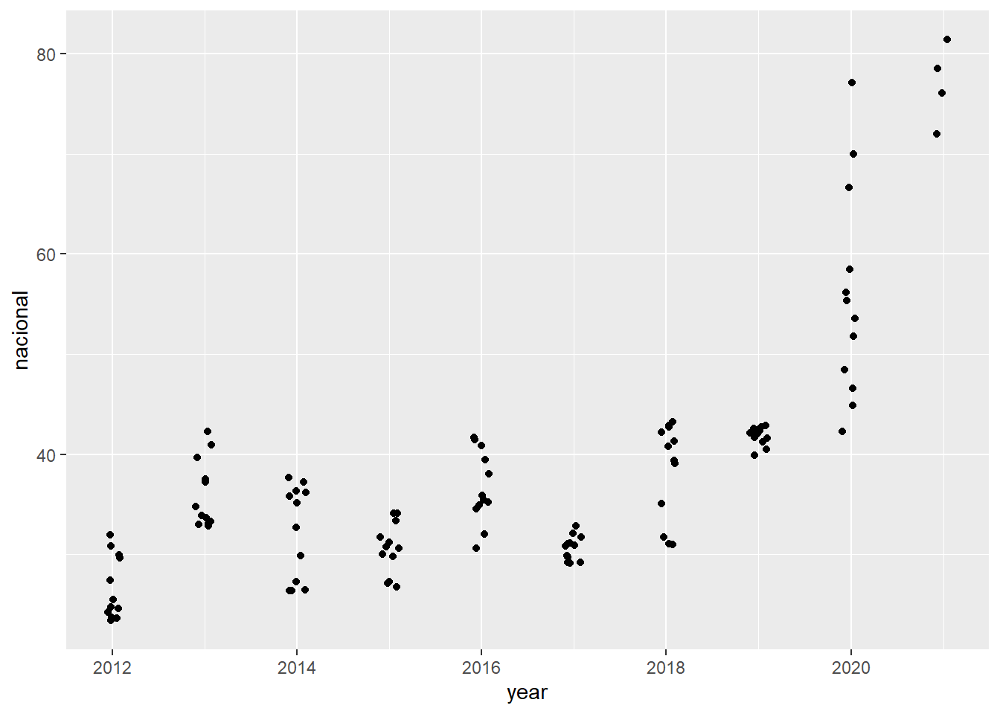
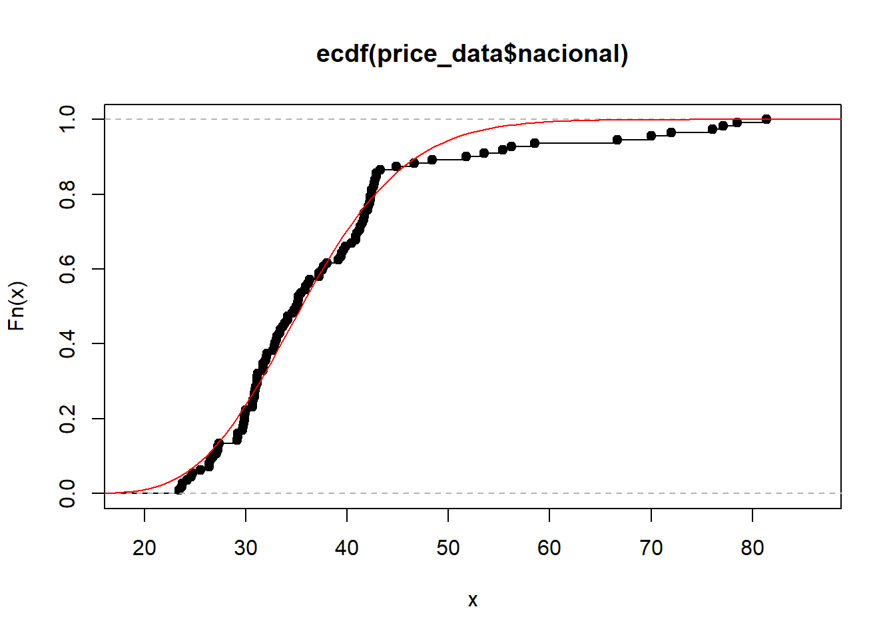
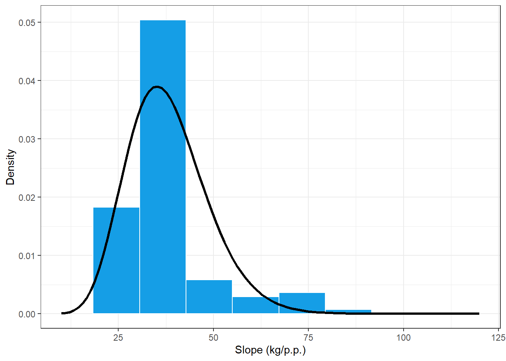

library(tidyverse)
library(readxl)
library(cowplot)
library(gsheet)
library(stats4)
library(minpack.lm)
library(ggdist)
library(lubridate)
library(ggthemes)
library(cowplot)Data
# Severity on check
eff_yld_data = read_excel("data/data_simulation.xlsx")
cost_data = read_excel("data/costs.xlsx")
price_data = read_excel("data/historical_wheat_price_br.xlsx") %>%
mutate(year = year(data)) %>%
filter(year >=2012)Price
price_data %>%
ggplot(aes(nacional))+
geom_histogram(bins = 20,color ="white", fill = "gray")
price_data %>%
ggplot(aes(year, nacional))+
geom_jitter(width = 0.1)
environment(ecdf(price_data$nacional))## <environment: 0x0000000033a961c8>Fx =environment(ecdf(price_data$nacional))$y
x = environment(ecdf(price_data$nacional))$x
price_reg = nlsLM(Fx ~ pgamma(x, shape, rate,log = FALSE) ,
start = c(shape = 2.5, rate = 0.13),
control = nls.lm.control(maxiter = 1024))
summary(price_reg)##
## Formula: Fx ~ pgamma(x, shape, rate, log = FALSE)
##
## Parameters:
## Estimate Std. Error t value Pr(>|t|)
## shape 19.49096 0.68952 28.27 <2e-16 ***
## rate 0.54014 0.01954 27.64 <2e-16 ***
## ---
## Signif. codes: 0 '***' 0.001 '**' 0.01 '*' 0.05 '.' 0.1 ' ' 1
##
## Residual standard error: 0.03342 on 110 degrees of freedom
##
## Number of iterations to convergence: 8
## Achieved convergence tolerance: 1.49e-08shape = summary(price_reg)$coef[1]
rate = summary(price_reg)$coef[2]
plot(ecdf(price_data$nacional))
curve(pgamma(x, shape, rate),0,90, add = T, col = "red")
price_data %>%
ggplot(aes(nacional))+
geom_histogram(aes(y = ..density..),bins = 10, color = "white", fill = "#159EE6")+
stat_function(fun=function(x) dgamma(x, shape, rate), size = 1.2, color = "black")+
theme_bw()+
xlim(10,120)+
labs(x="Slope (kg/p.p.)", y = "Density")## Warning: Removed 2 rows containing missing values (geom_bar).
MLE
MASS::fitdistr(price_data$nacional, "gamma", start=list(shape=14.2, rate=0.35))## Warning in densfun(x, parm[1], parm[2], ...): NaNs produzidos## shape rate
## 12.98257797 0.34155309
## ( 1.71279596) ( 0.04594218)plot(ecdf(price_data$nacional))
curve(pgamma(x, 12.98, 0.341),0,90, add = T, col = "red")
price_data %>%
ggplot(aes(nacional))+
geom_histogram(aes(y = ..density..),bins = 10, color = "white", fill = "#159EE6")+
stat_function(fun=function(x) dgamma(x, 12.98, 0.341), size = 1.2, color = "black")+
theme_bw()+
xlim(10,120)+
labs(x="Slope (kg/p.p.)", y = "Density")## Warning: Removed 2 rows containing missing values (geom_bar).
# using regression
ks.test(Fx, pgamma(x, shape, rate) )##
## Two-sample Kolmogorov-Smirnov test
##
## data: Fx and pgamma(x, shape, rate)
## D = 0.071429, p-value = 0.9375
## alternative hypothesis: two-sided# using Maximum likelihood
ks.test(Fx, pgamma(x, 12.98, 0.341))##
## Two-sample Kolmogorov-Smirnov test
##
## data: Fx and pgamma(x, 12.98, 0.341)
## D = 0.16071, p-value = 0.1108
## alternative hypothesis: two-sided# p-value gives the probability of data distributions be equal to the theoretical distribution obtained Probability distributions
Simulations
library(truncnorm)## Warning: package 'truncnorm' was built under R version 4.0.5Tropical
set.seed(1)
n_sim = 50000
funs = unique(eff_yld_data$fungicide)
reges = unique(eff_yld_data$region)
box1=data.frame()
for(i in 1:length(funs)){
k=1
single_data = eff_yld_data %>%
filter(fungicide == funs[i],
region == reges[k])
single_cost = cost_data%>%
filter(fungicide == funs[i],
region == reges[k])
cmin = single_cost$cost - single_cost$cost*0.05
cmax = single_cost$cost + single_cost$cost*0.05
C = runif(n_sim,cmin, cmax )
P = rgamma(n_sim, shape, rate)/60
y_mu = single_data$mean_yld
y_se = single_data$SE_yld
Y = rtruncnorm(n_sim, a=0, b=Inf, y_mu, y_se)
profit = (P*Y) - C
eventos = (C <= (P*Y))*1
lil_box = data.frame(fungicide = funs[i],
region = reges[k],
C_point =single_cost$cost,
C,
P,
Y,
profit,
eventos)
box1 = box1 %>%
bind_rows(lil_box)
}subtropical
set.seed(1)
n_sim = 50000
funs = unique(eff_yld_data$fungicide)
reges = unique(eff_yld_data$region)
box2=data.frame()
for(i in 1:length(funs)){
k=2
single_data = eff_yld_data %>%
filter(fungicide == funs[i])
single_cost = cost_data%>%
filter(fungicide == funs[i],
region == reges[k])
cmin = single_cost$cost - single_cost$cost*0.05
cmax = single_cost$cost + single_cost$cost*0.05
C = runif(n_sim,cmin, cmax )
P = rgamma(n_sim, shape, rate)/60
y_mu = single_data$mean_yld
y_se = single_data$SE_yld
Yt = rtruncnorm(n_sim, a=0, b=Inf, y_mu[1], y_se[1])
Yst = rtruncnorm(n_sim, a=0, b=Inf, y_mu[2], y_se[2])
Y = Yt + Yst
profit = (P*Y) - C
eventos = (C <= (P*Y))*1
lil_box = data.frame(fungicide = funs[i],
region = reges[k],
C_point =single_cost$cost,
C,
P,
Y,
profit,
eventos)
box2 = box2 %>%
bind_rows(lil_box)
}
box = bind_rows(box1, box2)probs = box %>%
group_by(fungicide,region) %>%
summarise(P = round(mean(eventos),2),
m = mean(profit),
lower = quantile(profit, 0.025),
upper = quantile(profit, 0.975)) %>%
# mutate(P = paste("P(I \u2265 C) =",P)) %>%
mutate(P = paste("p =",P))## `summarise()` regrouping output by 'fungicide' (override with `.groups` argument)probs %>%
arrange(-m)box %>%
# mutate(region = factor(region, levels = c("Tropical", "Subtropical"))) %>%
ggplot(aes())+
geom_vline(xintercept = 0, color = "gray40")+
stat_slab(aes(profit, fungicide, fill = region, alpha = stat(x > 0)))+
stat_pointinterval(aes(profit, fungicide,group=region, color= region),
# position = position_dodge(width = 0.2),
position = position_dodge(width = .6, preserve = "single"),
# color = "black",
.width = c(0.75,0.95),
alpha = 0.8)+
geom_point(data = cost_data,
aes(cost, fungicide, shape = "Spray cost"),
size =2 )+
geom_text(data = cost_data,
aes(cost, fungicide, label = cost),
size =3, vjust = 2, color = "black", fontface="bold")+
geom_text(data = probs,
aes(m, fungicide, label = P, color = region),
position = position_dodge(),
size =3, vjust = -3, hjust = -0.5, angle = 0, fontface="bold.italic")+
# scale_fill_manual(values = c("orange", "steelblue"))+
# scale_color_manual(values = c("orange","steelblue"))+
scale_fill_calc()+
scale_color_calc()+
scale_alpha_manual(values = c(0.2,.9), labels = c("Positive", "Negative"))+
guides(alpha =F)+
theme_minimal_vgrid()+
scale_shape_manual(values= 16)+
coord_cartesian(xlim = c(-100,600))+
theme(legend.position = "bottom") +
labs(x = "Profit US$/ha",
y = "",
fill = "",
color ="",
shape = "")
ggsave("figures/profit.png", dpi=600, height = 7, width = 6)